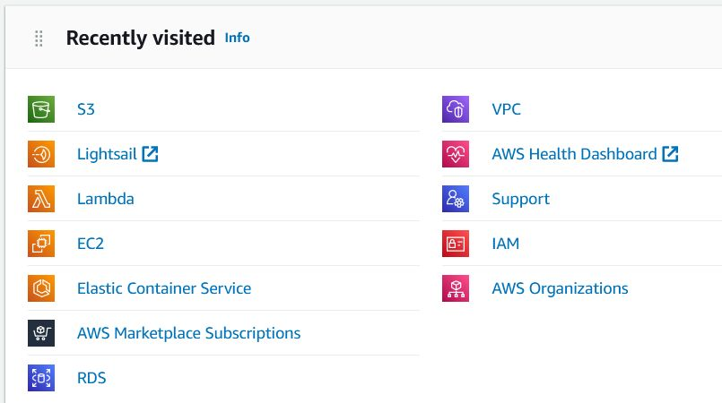

EPAM Cloud&DevOps Fundamentals Autumn 2022
List of AWS services

Amazon Elastic Compute Cloud
Amazon Elastic Container Service
AWS Cloud Lambda
AWS Lightsail
AWS Simple Storage Service
Amazon Identity and Access Management
Amazon Management Console
Amazon Virtual Private Cloud
Amazon DynamoDB
List of completed labs
Migrate from MySQL to Amazon RDS
Create a Serverless Workflow with AWS Step Functions and AWS Lambda
Build a Basic Web Application
Host a Static Website
Setting Up Your AWS Environment
Deploy a LAMP Web App on Amazon Lightsail
Launch a Linux Virtual Machine with Amazon Lightsail
Launch and Configure a WordPress Instance with Amazon Lightsail
Store and Retrieve a File with Amazon S3
Batch Upload Files to Amazon S3 Using the AWS CLI
Deploy Docker Containers on Amazon ECS
Run a Serverless "Hello, World!" with AWS Lambda
Getting Started with the AWS Management Console
Set Up a CI/CD Pipeline on AWS
(not completed -- hope to finish it soon!)
Check the Integrity of Data in Amazon S3 with Additional Checksums
Create and Connect to a MariaDB Database with Amazon RDS
How to Setup an Nginx Reverse Proxy
Adding and editing firewall rules in Amazon Lightsail
Migrate a Git Repository to AWS
(Maybe I'll implement it it my final project... depends on what my mentor has to say)
.......
And many others!